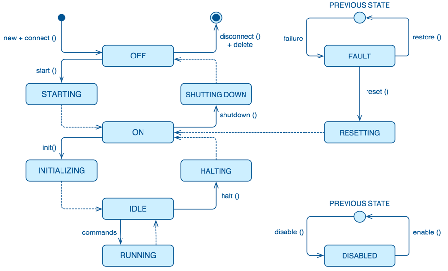
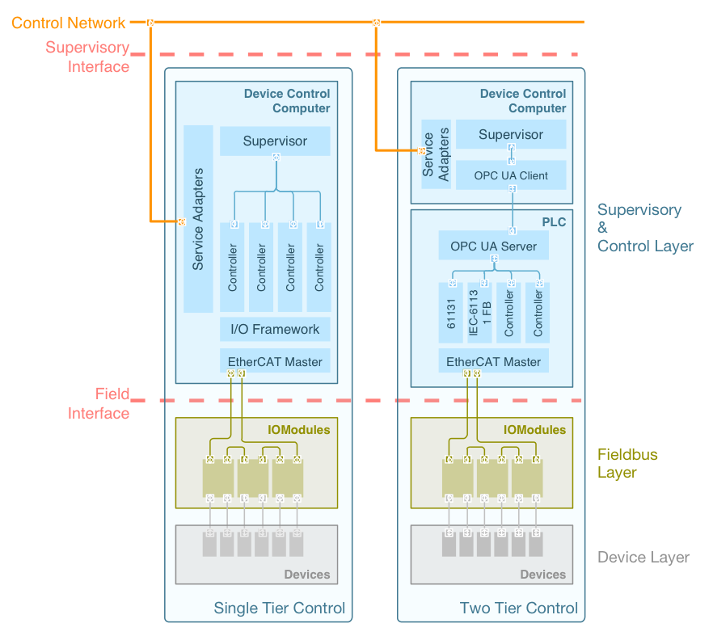

5. DCS Specifications¶
This chapter defines common requirements applicable to each GMT DCS. It comprises DCS architecture, software and hardware specifications.
5.1. Functional Requirements¶
5.1.1. Process Control¶
SWC-DCS-0012: DCS control functions
The DCS shall implement the following control functions:
- Control process inputs and outputs
- Operation state monitoring
- Operation logic
- Alarms detection and management
- Configuration change and management
- Error and status logging
- CSS startup and shutdown sequences
- Telemetry sampling and management
- Software safety when applicable
- Image and other data processing
- Goal elaborations (desired goals for state variables over time)
SWC-DCS-0014: Control loop optimization
The DCS shall optimize the control loops in order to reduce the frequency of activation of the CSS Devices.
5.1.2. Process Supervision¶
SWC-DCS-0015: DCS supervisory functions
The DCS shall implement the following supervisory functions:
- Subsystem integrity (e.g., collision avoidance)
- Subsystem component configuration (e.g., components are configured in the right sequence and with the right configuration properties, LUTs)
- Subsystem robustness (e.g., behavior in presence of no nominal conditions, fault management and tolerance)
- Subsystem life-cycle (e.g., startup and shutdown)
- Subsystem embedded diagnosis
- Subsystem operation modal transition (for subsystems that have different modes of operation)
- Subsystem IO health
Note: Supervisory functions include also sequencing, archiving, monitoring, diagnostics, calibration and visualization.
SWC-DCS-0016: Status information
The DCS shall provide status information required to operate and debug the CSS.
Note: The status information includes CSS operating states, state machine transitions, alarm conditions, log messages and configuration change events.
SWC-DCS-0017: Local Storage
The DCS shall not store permanently any data.SWC-DCS-0018: Central Operation
The DCS shall be able to be operated remotely centrally from the telescope control room(s).
5.1.3. Process Monitoring¶
SWC-DCS-0019: State variable sampling
The DCS shall sample each process state variable with an identifier, a time stamp and an error identification in case of error.
Note: Units, name, Quality of Service parameters and description of the state variable are not required in the sampled data as they are defined in the DSC SDF.
SWC-DCS-0020: Raw data conversion
The DCS should apply the conversion from raw data to engineering data (scaling) as near as possible to the source of the data.SWC-DCS-0021: Time stamping latency
The DCS shall time stamp state variables as close as possible to the source of data.SWC-DCS-0022: Calibration factor
The DCS shall provide the capability to configure the calibration factor and conversion formula applied to each state variable.
Note: Identify and capture relevant Device properties/features
SWC-DCS-0023: State variable data transmission
The DCS shall provide the capability to transmit both raw data and engineering data to the GCS Core systems.SWC-DCS-0024: Telemetry data archiving
The DCS shall archive telemetry data only in the case that a circular buffer is required to manage high throughput telemetry.
Note: All the GMT telemetry data is stored and archived by the telemetry service outside the DCS.
5.1.4. State Variables¶
Definition of state variables and relationship with goals and sequencing

Fig. 73 Reactive Close Control Loop
The above diagram represents an overview of the control, supervision and monitoring functions and their relation with state variables.
ops_state State Variable
The ops_state state variable represents the operational state of a Component [reword]. A set of states addresses the distributed nature of the component and its life cycle management. Figure 5‑1 shows the ops_state state machine. Only the description of each state is shown. Details about entry actions, transitions and activities are omitted in this diagram.
Fig. 74 Controller State Machine
Table 43 provides the specification of the Controller state machine. The specification defines what actions to implement in every state or transition, however in some of the states each Controller implements its own specific logic.
Table 43 Component ops_state Specification¶ StateState DescriptionINITIALInitial pseudo state. The Controller is not operational because ithas not been created yet. The Controller cannot inform this stateas it is not running. In this state the software is not running andcontrolled equipment is not available.TERMINALFinal pseudo state of any Controller. It is equivalent to theinitial state. A final state cannot have any outgoing transitions.PREVIOUS STATEThis pseudo state is a UML formalism that, within a compositestate, memorizes the previous sub-state that was active prior toleaving the composite state. This is used when a Controllerenters the FAULT or DISABLED states.OFFThe Controller is created, loaded and initialized with thedefault properties, but part of the software and hardware is notinitialized and configured yet. All the external Devicescontrolled by the Controller shall be switched-off. In thisstate the Controller is not ready for operation, but it ispossible to perform tests and diagnostics activities, speciallyrelated to the communication capabilities. The Controller is ina static state waiting for events.STARTINGThe Controller is being started. Any external equipmentcontrolled by the Controller is being switched on. In somecases, the power supply is shared with other Controllers. Italso performs the starting procedure which can include:• Obtaining configuration properties from the configurationsystem• Obtaining references to the required device or bus drivers• Starting telemetry samplers, alarm rules, etc.• Checking communication with the connected Devices (e.g., amotion drive)Other activities that depend on the specific Controllers andDevices connected to it.ONThe Controller and the connected Devices are already properlyinitialized and configured. When connected, and depending onthe Controller, external equipment shall be in safe state (e.g.,brake engaged, motion drives disabled, locking pins inserted).This state can be the final state after a reset or after a powerfailure.INITIALIZINGWhile the Controller is in this state the necessary proceduresrequired to make the controller ready to receive operationrequests (e.g., find fiducial marks) are executed.RUNNINGThe Controller is running and can be idle or serving anoperation request. In this state the Controller can receive newcommands or is accepting data in its data inputs and sendingdata through its data outputs.SHUTTING DOWNBack to OFF state (different for each Controller: power offDevices)HALTINGBack to ON state (different for each Controller: Engage brakes,disable drives)FAULTThe Controller has detected a severe failure and is waiting foran event to occur (e.g., operator input) to correct suchsituation.RESETTINGReturn to a safe and known state. For example, when theController has entered into a FAULT state, due to the ISStriggering an interlock condition (which can disable drives,remove power, etc.), a reset command must be sent to theController.DISABLEDIn this state the Controller rejects attempts to perform anycontrol action. This is especially important with Controllersconnected to Devices. In this state the Controller does notsend demands to the equipment requesting motion or a change (amessage is sent to the client indicating that the Controller isdisabled). Note that the Controller is ready and it will answerrequests that ask for some status, but it will not execute anycommands that lead to actions on connected Devices. This statecan be reached from any state, and when enabled, will return tothe previous state.SWC-DCS-0079: DCS State Machines
Each DCS component shall implement ops_state state machine.
SWC-DCS-0080: State Machine monitoring
Each DCS component shall send an status message for each state transition to the GCS.
sim_mode State Variable
Controllers that interface with hardware support specialized operation modes, on-line and simulated:
- In real mode, controllers try to detect and setup the hardware elements connected to them during startup. If some of the required hardware devices are not available the controller will transition to fault mode. This is the default mode when the system is deployed for operation at the observatory.
- In simulation mode, controllers will setup the I/O framework in simulation mode. Communication messages with the hardware will be logged, but will not be sent to the hardware devices. Hardware devices will not be powered up during the startup sequence. This mode is intended to be use during development when the hardware is not yet available or is available partially. It also enables controller debugging once the hardware is integrated.
SWC-DCS-0081: on-line operation mode
DCS shall support the on-line operation mode
SWC-DCS-0082: simulation operation mode
DCS shall support the simulation operation mode
control_mode State Variable
GMT distributed components shall support two operation modes, standalone and integrated:
In integrated mode, components will try to connect with the observatory services. If the services are not available the component will stop its startup sequence. This is the default operation mode when components are integrated and deployed in the observatory or integration simulator.
In standalone mode, components do not try to connect to the observatory services (e.g., log and alarms send their messages to the console or a file). This operation mode is intended to be used during initial component development or when network services are not available.
SWC-DCS-0083: Normal operation
The DCS shall always be in integrated mode during normal operation
SWC-DCS-0084: Standalone mode
Use of local standalone mode should be minimized as much as possible.
5.1.5. Operation Support¶
Visualization
SWC-DCS-0025: DCS specific user interface elements.
The DCS shall provide specialized user interface elements when the basic set is not adequate for an efficient operation of the system under control (reword).
Note: The GMT “User Interface Framework” (ui_fwk) provides visualization components that target general use cases. They may be appropriate for general engineering and basic operation. However with the DCS is controlling a complex subsystem specialized user interface components may need to be deployed.
TBA: [specific engineering interfaces, specific operation interfaces]
Data Processing (draft)
SWC-DCS-0026: Data processing function
The DCS shall implement the data processing functions required to operate the system under control.
High-Level Operations (draft)
SWC-DCS-0027: Sequencing
The DCS shall implement sequencing functions to allow to operate the from the sequencing tools.
Note: the contents of the sequencer commands per DCS shall be defined.
SWC-DCS-0028: Operation workflows
The DCS shall implement diagnosis functions to characterize non-nominal behavior of the system under control or other DCS components.
SWC-DCS-0029: Operation commands
The DCS shall implement commands that implement the required state changes.
Diagnosis (draft)
SWC-DCS-0030: Diagnosis function
The DCS shall implement diagnosis functions to characterize non-nominal behavior of the system under control or other DCS components.
Note: Diagnosis functions are necessary with the operational complexity of the system makes hard to understand the behavior of the system under nominal and non-nominal operations.
Calibration
SWC-DCS-0031: Calibration function
The DCS shall provide calibration functions when the operation of the system under control requires parameters that have to be obtained after the execution of measurements.
Integrity (draft)
SWC-DCS-0032: Active alarm status
The DCS shall identify and monitor the CSS alarm conditions and generate an alarm event when these conditions take place.
Life-cycle (draft)
SWC-DCS-0033: life-cycle requirement
The DCS master supervisor shall coordinate the life-cycle of the DCS components.
Quality Assessment (draft)
SWC-DCS-0034: Quality assessment requirement
TBD
DCS Operation Parameters Definition (e.g. OT)
SWC-DCS-0035: Operation tool plugins (draft)
TBD
SWC-DCS-0036: Operation tool input parameters (draft)
Operation definition plugin parameters. Operation Description Files (ODFs).
Subsystem specific parameter dictionary.
DCS Data Products (draft)
SWC-DCS-0037: Subsystem specific data products
Keyword dictionary / product dictionary / pipelines / recipes. Data provenance.
DCS Controlled Devices
SWC-DCS-0038: DCS controlled devices
The DCS shall provide descriptions of the devices under its control. These descriptions should capture the information relevant to perform the control functions and to operate the Devices. The metamodel specifies the features (e.g. vendor, model, location) necessary to model a Device.
SWC-DCS-0039: Device calibration data provenance
The description of the devices shall include information about the serial number and location of Devices that can be exchanged so the provenance for the calibration data can be ensured.
Alarms
The purpose of the alarm system is to provide information to the operators for fault diagnosis and correction. The GCS Alarm Service implements an observatory wide fault management strategy to assess and manage the overall health of the system.
SWC-DCS-0040: Active alarm status
The DCS shall identify and monitor the CSS alarm conditions and generate an alarm event when these conditions take place.
SWC-DCS-0026: Active alarm status
The DCS shall transmit any changes in the status of alarm conditions.
SWC-DCS-0027: Alarms and operating state consistency
The DCS shall take into account the operating states of the CSS when monitoring alarm conditions.
Note: This is needed to avoid sending alarms when they are not significant for a given operation state.
SWC-DCS-0028: Alarm event information
- An alarm shall contain:
- A timestamp
- A severity
- A value
- An alarm description
- Alarm state
Error and Status Logging
The logging function enables to record the history of events, whether normal or abnormal, surrounding the GMT operations. Log events are intended for view and access on an operation console, and stored in a persistent database.
SWC-DCS-0029: Log event information
A log message shall include:
- A time stamp
- A process identifier according to the naming scheme
- A text explaining the event
- A message level (debug, info, warning, error).
SWC-DCS-0030: Log events
The DCS shall record and transmit the following messages to the logging system:
- Each timing, DCC, PLC or embedded system events or state changes.
- Each change of configuration properties
- Each transitions in operating states
- Each command sent by GCS to the DCS
- Each state variable validity change
- Each actions done locally by operators
- Any error shall be detected and an error message shall be generated and communicated to the GCS core systems.
Configuration
SWC-DCS-0031: Configurable properties
The DCS shall be designed to be configurable by means of a set of properties.
Note: The specification of the configurable properties of a DCS is captured in the DCS System Definition Files (SDF).
SWC-DCS-0032: Configuration parameters
The DCS shall provide the capability to modify any configuration property with minimum disturbance to the correct operation of the CSS
SWC-DCS-0033: Properties Configuration
The settings which are expected to be changed, however rarely, in course of the CSS lifetime, should be made configurable without additional program recompilation and, preferably, without program restart.
Computing Resources Management
SWC-DCS-0034: Remote control functions
The DCS shall provide remote control functions (e.g. reboot, configure, start, stop, switch to standalone/integrated control mode).
Note: Remote control functions shall comply with the safety rules of the GMT site.
SWC-DCS-0035: Monitoring function
The DCS shall provide the capability to monitor DCC functions and equipment.
SWC-DCS-0036: Equipment to be monitored
The DCS shall monitor at least:
- DCS hardware (DCC, PLC) and software
- Device Controllers
- Fieldbus networks
- Interface with GCS
SWC-DCS-0037: Monitored equipment status
The DCS shall provide the operational status (operational, partially operational or not operational) of any monitored equipment
SWC-DCS-0038: Equipment performance monitoring
The DCS shall provide the capability to monitor the performance of the DCS equipment.
Note: Performance information such as field bus status, CPU load and memory usage or network bandwidth utilization shall be recorded.
SWC-DCS-0039: Monitoring function health
The monitoring function shall include self-tests and live tests.
5.2. Non-Functional Requirements¶
5.2.1. Security¶
SWC-DCS-0040: DCS access control
DCS shall restrict access to authorized systems/people.
[add something about cyber security]
5.2.2. Performance¶
SWC-DCS-0041: Availability
The availability of the DCS shall be compliant with the RAMS requirements of the CSS and GMT.SWC-DCS-0048: Sensor data transport QoS
The duration for update of information from sensors to the GCN shall meet the Quality of Service requirements as defined in each corresponding SDF.SWC-DCS-0049: Command transport QoS
Duration for commands from GCN to actuators shall meet the QoS requirements as defined in each corresponding SDF.SWC-DCS-0050: Wavefront control transport QoS
DCS participating in the GMT wavefront control system shall meet the QoS requirements as defined in each corresponding SDF.SWC-DCS-0051: Time Synchronization
The DCS shall be synchronized with the GMT central time reference.
5.2.3. Availability¶
SWC-DCS-0052: Hot swapping
The DCS shall use hot swapping whenever it is required by the RAMS analysis of the CSS.SWC-DCS-0053: Redundancy
The DCS shall use redundancy whenever it is required by the RAMS analysis of the CSS.
5.2.4. Diagnosis¶
SWC-DCS-0054: DCC and PLC Diagnosis
The DCS computers, PC and PLC based DCCs, and equipment shall have provisions for self-diagnosis.
Note: DCCs and equipment should repeat self-checks at scheduled times.
5.2.5. Safety(draft)¶
SWC-DCS-0055: Safe operation
The DCS shall be able to autonomously maintain safe operation of the CSS Devices in case of loss of communication with GCS systems.
[Add reference to ISS]
[Add some guideline for safety, address black-channel (TwinSafe) design]
SWC-DCS-0056: Software Safety
The DCS shall not be the ultimate responsible of the safety of the CSS, the system under control or persons.SWC-DCS-0057: Limit Protection
The DCS shall have built-in absolute-limit protection to prevent errors.SWC-DCS-0058: Limit Protection
The DCS shall have time-outs to ensure correct operation in case of GCS failure.SWC-DCS-0059: Non-assumption strategy
The DCS components shall avoid any assumption about the status of the CSS equipment or the plant during the start-up process or normal operation.
Note: Although the DCS records the status of the equipment when it was powered off, human intervention may have change the configuration of the CSS equipment.
5.2.6. Naming Convention¶
SWC-DCS-0011: Unique naming
Each DCS, DCS package and DCS component shall have a unique name.SWC-DCS-0150: Use of abbreviations
Abbreviations used in the componsition of names shall be contained in the glossary n-grams.
Note: See SWC glossary for reference.
SWC-DCS-0151: DCS naming
Each DCS shall be named according to the following format:
<SUBS>_dcs # where <SUB>: Abbreviation of the Subsystem new RegExp ///^#{SUBS}_dcs$///.test dcs.name #formal naming testSWC-DCS-0152: Package naming
Each DCS Package shall be named according to the following format
<SUBS>_<CAT>_<MCLASS> # where <SUB>: Abbreviation of the Subsystem <CAT>: Abbreviation of the functional category of the package as defined in the glossary n-grams <MCLASS>: Metamodel class abbreviation (in this case Packages -> pkg) new RegExp ///#{SUBS}_(#{CATS.join "|"})_pkg$///.test pkg.name #formal naming testSWC-DCS-0153: Component naming
Each DCS Component shall be named according to the following format:
<SUBS>_<CMP>_<CAT> # where <SUB>: Abbreviation of the Subsystem <CMP>: Component abbreviation <MCLASS>: Metamodel class abbreviation of the component class (e.g. Controller -> ctrl) as defined in the glossary n-grams new RegExp ///#{SUBS}_[a-z_]+_(#{MCLASS.join "|"})$///.test cmp.name #formal naming test
5.2.7. Software Infrastructure¶
A set of software packages, named GMT Software Development Kit (devkit), is distributed by GMTO for the development, test and operation of the DCS. This package includes the required Common Frameworks and Observatory Services distribution.
SWC-DCS-0060: GCS Simulator / early CORE / eCORE
The DCS shall use the GCS Simulator as a tool for DCS software development, support, integration, factory acceptance test and site acceptance test.SWC-DCS-0061: GDK version
The DCS shall use the latest GDK system version.SWC-DCS-0062: DCS communication with GCS core systems
The DCS shall use the GMT Core Framework for the communication to/from DCS Controllers and Supervisors.
Operating Systems
SWC-DCS-0063: DCC operating system
The Operating System for the DCC is Linux, Fedora 21 or later (TBC).
Note: Current prototypes are running in this platform.
Programming Languages and Tools
SWC-DCS-0064: Software version control tool
The software version control tool shall be git and github shall be used for collaboration.
SWC-DCS-0065: PLC-based DCC programming language
The PLCs shall be programmed using IEC 61131-3.
SWC-DCS-0066: PLC-based DCC motion control
The PLCs motion functions shall be implemented using the PLCOpen Motion Control standard.
SWC-DCS-0067: PLC-based DCC communications
The PLCs shall implement and OPC UA server to enable communication from/to the DCC Master Supervisor.
SWC-DCS-0068: PLC-based DCC software
The PLCs shall be programmed with the engineering software TwinCAT v3.0.
SWC-DCS-0069: PC-based DCC software
The DCS shall use the GDK software and environment to develop and test the PC based DCC software.
SWC-DCS-0070: PC-based DCC fieldbus master
The DCS shall use the igH etherCAT master in order to acquire the process image of the field devices connected to the fieldbus.
Note: The I/O Framework provided by GMTO provides a simplified way of accessing the fieldbus process image.
SWC-DCS-0071: GCS SDK version
Fast controllers shall be programmed using the latest version of GCS SDK distribution.
SWC-DCS-0072: Middleware agnostic
DCS components shall be independent of the communication middleware used.
SWC-DCS-0073: Distributed middleware transport
Nanomsg (TBC) shall be used for the communication between distributed components.
Note: The GMT Core Framework provides independence of the middleware and is the recommended way of implementing distributed communications.
SWC-DCS-0074: Distributed middleware serialization
The serialization/deserialization of transmitted packages shall be done using MessagePack (TBC).
Note: The GMT Core Framework provides independence of the serialization format and is the recommended way of implementing distributed communications.
SWC-DCS-0075: Programming languages
The programming languages that can be used in the DCS software development are:
- ANSI C++ cxx11 (TBC) for performance sensitive application programming in the DCC
- ANSI C c99 (TBC) for driver programing in the DCC
- Python 2.7/3.x (TBD) for general programming
- Javascript /Coffeescript for graphical programming and modeling
- IEC 61131-3 for PLC programming
Note: More specific rules should be provided. Check current code generators and provide recommended implementation based on type of component.
SWC-DCS-0076: User interface components
User interfaces components shall be developed according to the W3C Web Component standard.
Note: Google Polymer provides a compliant Web Component implementation. The GMT UI Framework (ui_fwk) provides reusable components to implement user interfaces
Modeling Requirements
System Definition Files (SDF) are used to capture the formal specification of the DCS. Section nnn provides additional requirements on SDF. As SDF play a key role in the specification, testing and validation of the DCS architecture. SDF related life-cycle requirements are defined below.
SDFs are written in a Domain Specific Language (DSL). A DSL is a computer programming language of limited expressiveness focused on a particular domain. A DSL facilitates productivity and communication with domain experts and DSL stakeholders. SDFs are ASCII files that are parsed and stored in the semantic model database and processed for consistency and completeness. They are hosted in the GMTO central software private repository in Github, for access by DCS developers and revision control.
The concrete syntax of the SDFs is provided by the DSL, while the semantics are given by a set of models (metamodels) following the Object Management Group Meta Object Facility architecture.
[add graphic to explain this]
The GDK provides tools for:
- DCS component skeletons and scaffolding generation
- Subsystem build dependencies specification
- Test procedures and test data generation
- Stage-gate document generation
- Project progress reporting
- Subsystem deployment
- Interface document generation
The SDFs are one of the deliverables of the DCS development phases. More information on the SDF lifecycle and contents is available in DCS Specification Workflows document (GMT-SWC-REF-0000).
SWC-DCS-0077: SDF definition
The SDF of DCS component shall include the following information:
- DCS unique identification
- Commands list
- Alarm list
- Property list
- Control Data Inputs and Outputs
- Configuration property lists
- DCS constant values
- Default values (“factory settings”) for run-time configuration used for
- DCS start-up
- Physical (raw) signals list (I/O) [equivalent to data_inputs]
- Processed/converted signals list [equivalent to data_outputs]
- Telemetry monitor list
- Logging messages list
- Definition of the DCS state variables and corresponding state machines when applicable.
- Definition of the DCS user interface components
- Description of every component feature. [???]
Note: The formal specification of the SDF DSL is defined by the GMF metamodel.
[TBD] Add example?
[Add requirements about SDF validation, test generation and test execution?]
SWC-DCS-0077: Graphical modeling
SysML shall be used in the graphical description of the DCS designs.
Note: Although SDF provide a formal definition of the DCS that can be validated and it is used to drive the development of the system, graphic representations are useful to present high level views of the system structure and behavior (state diagrams, activity diagrams, internal block diagrams).
5.3. Hardware Requirements¶
5.3.1. Device Control Computer¶
The DCC (Device Control Computer) is a standardized computer specified by GMTO to be used in the deployment of the DCS. The DCC is connected to the GMT Control Network (GCN).
Each DCC host the software components that implement the functional and physical part of the control and data acquisition functions of the CSS devices, i.e. the Controlled Subsystem Plant – CSP in the Figure 3‑1.
Each DCC includes a processor and an interface to the I/O modules required to connect to hardware Devices.
I/O interfaces are either I/O adapters within the DCC (e.g. detector controller interface cards), or use a field bus to connect with remote I/O modules (i.e. Motion drives or discrete I/O signal interfaces).
Two types of DCCs are supported:
- PC-based DCCs Intel-based Industrial Computers (PCs) running Linux with real time extensions (RT_PREEMPT) are used in the following use cases:
- High bandwidth telemetry is required
- The DCS has to be integrated with the low latency network.
- High computing performance is required.
- Implementing complex operation scenarios is required
- Control loops or data acquisition rates are faster than 100 Hz.
- PLC-based DCCs Programmable Logic Controllers (PLCs) are used in the following use cases:
- The bandwidth necessary for telemetry is low.
- Simple supervision, coordination or operation scenarios.
When PLC based DCCs are used a Master Supervisor is deployed in a PC-based DCC that communicates with the PLC(s) using OPC UA. The procurement of this DCC Master Supervisor depends on the procurement agreement and may be provided by GMTO if the DCS provider is not familiar with the technologies used for DCS / GCS integration. The Figure below shows an example of this arrangement.
[review drawing to include physical interface]
Fig. 75 Single and Two Tier Controller Architecture
The primary functions of the DCC are:
- Hosting the supervisory and control DCS software components
- Hosting the GMT frameworks that enable communication between the DCS and the GCS
- Hosting the fieldbus (EtherCAT) master
- Hosting the physical interface that connects the DCC with the fieldbus
- Hosting the physical interface that connects the DCC with the GMT Control Network
- Hosting the physical interface that connects the DCC with the Low Latency Network
SWC-DCS-0086: DCS master supervisor deployment
Each DCS shall have one an only one DCS Master Supervisor deployed in one of the DCS DCCs.SWC-DCS-0087: DCC physical interface
Each DCC shall provide at least two ports to connect to the GCN.SWC-DCS-0088: DCC – DCS integration
Each DCC shall be integrated into the DCS.SWC-DCS-0089: DCC location
Each DCC shall be installed in the GMT Electronics room.SWC-DCS-0090: DCC power consumption
Each DCC shall not exceed 200W (TBC) of power consumption.
Note: DCC are installed in the Electronics Room.
SWC-DCS-0092: DCC physical envelope
Each DCC shall not use more than 4U (TBC) in a 19” rack.SWC-DCS-0093: DCC processor
Each DCS DCCs shall use an Intel compatible processor.
Note: The GMT DCS Product Catalog (GMT-SWC-REF-00000) provides a list of standardized
SWC-DCS-0092: DCC physical environment
Environment requirements (seismic, etc).
5.3.2. PLC-based DCS¶
SWC-DCS-0103: Physical interface
The physical interface between the DCS Master Supervisor DCC and the PLC(s) shall be Gigabit Ethernet Internet.SWC-DCS-0107: Data interface
The data interface protocol between the DCS Master Supervisor DCC and the PLC(s) controllers shall be OPC UA.
Note: The GMT core_fwk provides an OPC-UA client for Python and node.js [client platform].
SWC-DCS-0108: PLC
PLC-based DCC shall be Beckhoff series TBD or equivalent.SWC-DCS-0109: Standard products
PLC-based DCC, I/O Modules and field buses shall be selected from the GMT Software and Controls product catalogue (GMT-SWC-REF-00000).
5.3.3. PC-based DCS¶
SWC-DCS-0111: PC-based standard products
PC-based DCS shall use Device Control Computers (DCC) based on Intel industrial computers with PCI Express bus system and adequate interface to fieldbus and GCN.SWC-DCS-0112: DCC standard products
PC-based DCC, I/O Modules, terminal blocks and field buses shall be selected from the GMT Software and Controls product catalogue. (GMT-SWC-REF-00000)
5.3.4. Computing Resources Sizing¶
SWC-DCS-0042: Computing resources
The DCS computing resources shall be adequate to support the correct operation of the DCS.SWC-DCS-0043: Computing resource sizing
The DCS computing resources shall provide sufficient margins to allow adding additional functions.SWC-DCS-0044: Load factor characterization during acceptance tests
The acceptance tests shall provide information about the load factor of the DCS computing and network resources.SWC-DCS-0045: IO Module sizing
Additional reserve space for IO Modules per DIN rail in the allocated Standard Electronic Cabinet (SEC) shall be more than 20% (TBC)SWC-DCS-0046: Not equipped I/O channel additional reserve
Additional reserve I/O channels (not equipped) per type shall be more than 20% (TBC)SWC-DCS-0047: Equipped I/O channel additional reserve
Additional reserve I/O channels (equipped) per type shall be more than 5% (TBC)
5.3.5. Field Device Interface¶
SWC-DCS-0093: DCS field Devices interface
The interface between the DCC (both PLC and PC based) and the field Devices shall be the EtherCAT fieldbus.SWC-DCS-0094: DCS fieldbus layout
The first IO Module of the DCS fieldbus shall be installed in the GMT Electronics room. The rest of the fieldbus IO Modules shall be installed in the Enclosure building SECs or smaller boxes when the performance requirements for the electrical signal path requires it.SWC-DCS-0095: DCS fieldbus cabling
The cabling between the first IO Module of the DCS and the rest shall be optical fiber. GMTO provides fiber links between the electronics room and the enclosure building as part of the GCN. The cabling between the field IO Modules shall be Ethernet UTP CAT 6 (TBC).SWC-DCS-0096: DCS cable redundancy
The fieldbus layout shall be designed to support cable redundancy as stated in EtherCAT protocol.
5.3.6. Motion Control Deployment¶
SWC-DCS-0085: Motion control deployment mode
The DCS shall use one of the recommended control deployment modes defined in the Table below for each individual degree of freedom.
Table 44 Motion Control Deployment Mode¶
Note: Motion drives are assumed to comply the IEC 61800-7-201 and IEC61800-7-301 mapping to EtherCAT.
SWC-DCS-0097: Motion Control
Motion control functions shall be implemented using motion drives that implement the CiA 402 profiles as defined in IEC 61800-7-201 / 301 (RD-5, RD-6).
Note: This is especially recommended in the case of single axis with single or dual feedback and single actuator.
SWC-DCS-0098: Motion Control Signals
Motion control related signals shall be connected to the drive auxiliary inputs/outputs.
Note: Example of motion signals are encoder feedback or home switches.
SWC-DCS-0099: Motion Control Loops
Depending on the Motion Deployment mode [swc-dcs-0085], motion control loops shall be closed in the drives using one of the standard profiles defined in IEC 61800-7-201/301 (RD-5, RD-6).
5.3.7. DCS Software Platform¶
SWC-DCS-0100: DCS software platform
Each DCC shall be configured by the DCS developer using the GDK provided by GMTO.SWC-DCS-0101: DCS hardware configuration
Each DCC shall be compatible with the GMT DCS Product Catalog (GMT-SWC-REF-00000).
5.3.8. Technical Camera Interface¶
SWC-DCS-0113: Technical camera data interface
The interface between the DCC and a technical CCD camera shall be GigE Vision.
Note: Goal GigE [ref] cameras with Genicam [ref] profile.
5.3.9. Science CCDs Interface¶
SWC-DCS-0113: Technical CCD camera data interface
The interface between the DCC and a science CCD camera shall be TBD.
5.3.10. Control Cabinets¶
[TBA] Add drawing. Include fiber transceivers
SWC-DCS-0113: Standard Electronic Cabinets
DCS field hardware shall be installed in the assigned standard electronic cabinets (SEC) as defined in the GMT Electronic Standards (AD-n).SWC-DCS-0114: DCC and PLC location
PC-based and PLC-based DCCs shall be installed in the electronics room electronic racks (ref).SWC-DCS-0115: DCC and I/O Module interface
DCCs and field I/O Modules are connected using the GCN fiber trunk lines.
Note: The GMT control network is a combination of fiber distribution units, fiber transceivers and CAT5 electrical cable to field elements.
5.3.11. Control Signal Cabling Rules¶
SWC-DCS-0116: Cabling rules
DCS cabling shall be compliant with the GMT Electronic Standards (GMT-SE-REF-00191) for signal cabling and routing.SWC-DCS-0117: SCP single connection point
A particular Subsystem Controlled Plant (SCP) / (Device Port) signal shall not be connected to different DCSs.
Note: In the case in which more than one DCS required access to a signal, the corresponding data shall be transmitted through the GCN.
SWC-DCS-0119: Long distance signal connection
If the SCP equipment and the DCS I/O Modules connected to it are far away from each other, then an optical fiber connection shall be used.SWC-DCS-0120: Types of cables
The cables used to connect the DCS with the SCP shall be compliant with the GMT Electronic Standards (GMT-SE-REF-00191).SWC-DCS-0121: Analogue signal cabling
Analogue signal cabling shall be compliant with the GMT Electronic Standards (GMT-SE-REF-00191).SWC-DCS-0121: Signal standards
Signals ranges and types shall be compliant with the GMT Electronic Standards (GMT-SE-REF-00191).
5.4. Interface Specification (draft)¶
This chapter defines the interface between the DCS and the GMT SWC Core Systems (DCP-GCS interface).
Data interface = connector map.
[Based on components/ports/connectors]
Two type of interfaces: component ports that offer DCS services to the outside are defined using connection maps. DCS components that are integrated with Core applications must implement an API which is often defined by inheritance from an abstract component definition.
DCS – Core system interfaces are specified using Connection maps. Connection map definitions are build using connectors that connect ports between different components.
TODO: DCP-GCS interface drawing. / supervisory interface.
- Internal interfaces:
- device map
- field map
- External interfaces:
- device map
- supervisory (better name) map [CORE – DCS maps]
5.4.1. Data Interface¶
5.4.2. Physical Interface¶
Device Control Computer (DCC)
DCC is considered being a part of the DCS. All DCC are connected to the GMT Control Network (GCN), although one and only one DCS Master Supervisor shall be deployed.
[TODO: Add network drawing]
Network Interface
Network interfaces provide the only physical interconnection between DCS and GCS. GMTO manages the GMT networks.
The GCN comprise the general-purpose service network (GSN), the Low Latency Network (LLN), the Data Archiving Network (DAN) and the Time Distribution Network (TDN).
Network Equipment
GCS network equipment is installed in the GMT electronics room. GMTO will provide the cables from DCS DCCs and PLCs to the GCS network equipment.
General Service Network (GSN)
SWC-DCS-0129: GSN
Each DCS shall have a redundant connection to the GSN.
Low Latency Network (LLN)
The LLN provides transport for real-time WFC control and telemetry. It guarantees data exchange with latency less than 10 microsec and jitter less than TBD microsec. The communication protocol is RDMA over 40Gbps Infiniband. Only DCS participating in fast WFC feedback control shall be connected to the LLN. DCSs may have multiple LLN network interfaces.
SWC-DCS-0130: LLN NIC
The DCS shall use only GMTO approved LLN NIC interfaces to connect to the LLN.
SWC-DCS-0131: LLN interface procurement
Specific hardware and software required by the LLN interface will be supplied by GMTO.
SWC-DCS-0132: LLN interface location
The LLN Interface is located in the GMT Electronic Room hosted by the DCC.
Time Distribution Network (TDN)
The TDN provides project-wide time synchronization. It allows the DCS DCCs to be synchronized with an accuracy of 50 us RMS to the GMT Time, which is Universal Coordinated Time (UTC). The TCN network is carrying Precision Time Protocol (PTP version 2, IEEE-11588-2008). Any DCC requiring high accuracy time synchronization and time stamping shall be connected the TCN.
SWC-DCS-0133: TDN interface
The DCS shall use only GMTO approved TDN interfaces to connect to the TDN.
SWC-DCS-0134: TDN interface procurement
Specific hardware and software required by the TDN interface will be supplied by GMTO.
SWC-DCS-0135: TDN interface location
The TDN Interface is located in the GMT Electronics Room hosted by the DCC.
Data Archiving Network (DAN) (TBC)
The Data Archiving Network (DAN) allows transferring the scientific data into the GMT Scientific Data Archiving System. The DAN is deployed using a dedicated high-throughput Ethernet network infrastructure.
SWC-DCS-0136: DAN interface
The DCS shall use only GMTO certified DAN interfaces to connect to the DAN.
SWC-DCS-0137: DAN interface procurement
Specific hardware and software required by the DAN interface will be supplied by GMTO.
SWC-DCS-0138: DAN interface location
The DAN interface shall be located in the GMT Electronics Room hosted by the DCC.